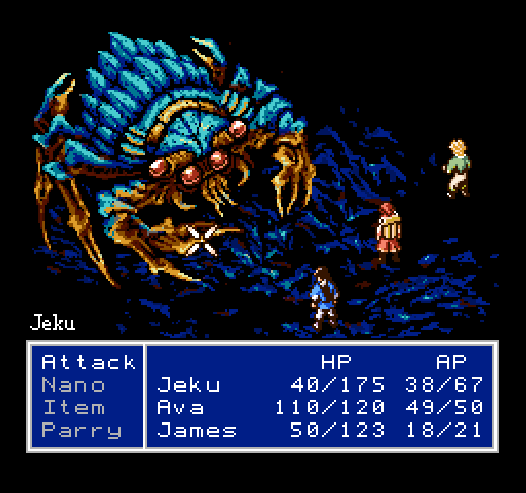
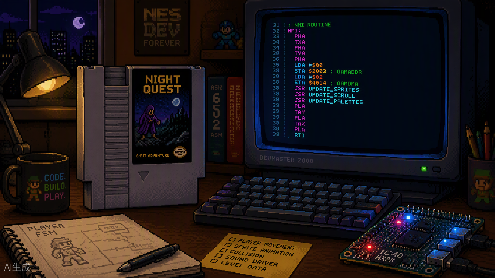
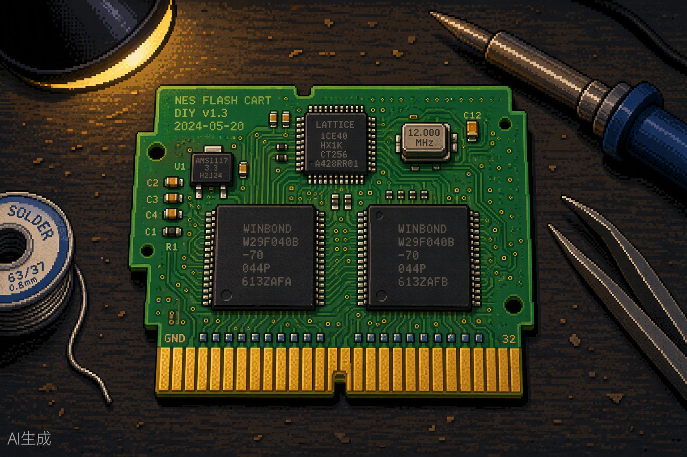
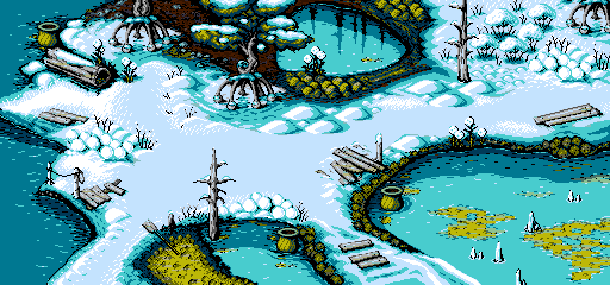
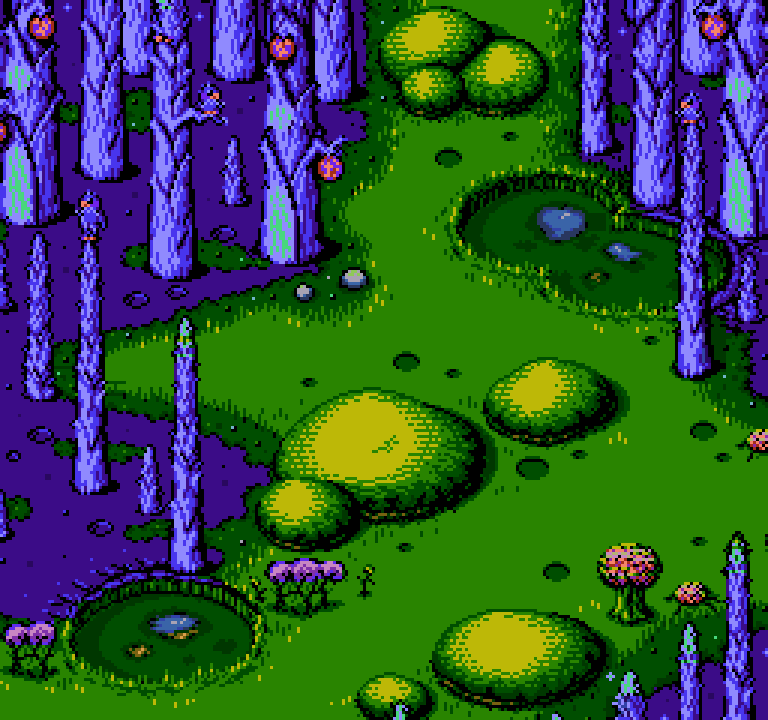
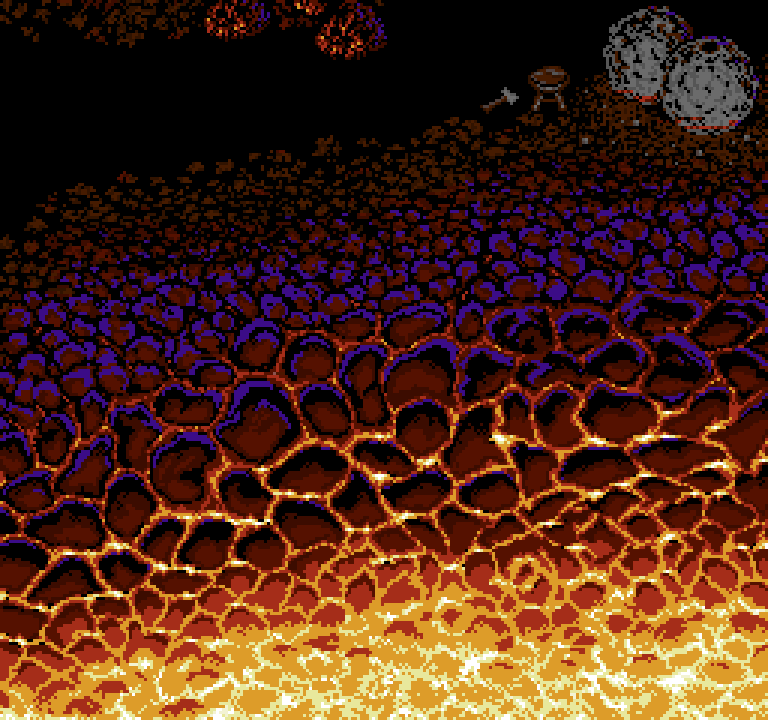

如何开发一款2026年的3A级红白机游戏
2026年09月02日 星期三最近又关注起红白机开发这个圈子。我以前写过MMC3的IRQ中断，还分析过《地球冒险》为什么难以汉化，算是对这块有点兴趣但一直没真做过游戏。
然后我就想了一个问题：2026年了，如果想做一款"3A级"的FC游戏，现在是个什么玩法？
这里的"3A"当然是打引号的。PS5 Pro都普及了，虚幻5的画面已经逼近电影，在40年前的8位机上谈3A，听起来像个玩笑。但《Former Dawn》这个游戏真的把这件事做出来了——Something Nerdy Studios开发的NES平台JRPG，号称"不可能完成的NES RPG"：960图块/屏的背景、8×1粒度的属性表、64个精灵同屏不闪烁、接近SFC水准的配乐。而它的载体，是一张普普通通的72Pin NES卡带。
先看一张它的战斗画面，体会一下"这真的是FC？"的感觉：


这篇算是我调研的一个整理：从写代码到做出实体卡带，2026年这条路大概是怎么走的。
开发工具链
用C语言写，别死磕汇编
现在写FC游戏已经不需要纯手写6502汇编了。主流方案是cc65，一个把C编译成6502机器码的开源工具链，配合Shiru写的neslib库。neslib把常用的事都封装好了：
- 精灵管理（OAM更新、8×8和8×16模式）
- 背景滚动（Nametable切换、分屏IRQ）
- 手柄输入
- 音乐引擎（FamiTone2，作曲用FamiStudio）
main.c大概长这样：
#include <neslib.h>
void main() {
ppu_off();
pal_bg(palette);
vram_adr(NTADR_A(2,2));
vram_write("HELLO 2026", 10);
ppu_on_all();
while(1);
}
编译、链接、出.nes文件，全程命令行，很舒服。
调试器用Mesen
调试器这块没什么悬念，就是Mesen。我之前分析《地球冒险》的PPU时序就是靠它，当时就觉得这个模拟器的调试功能强得离谱：
- 逐帧调试，CPU、PPU、APU周期都能单步
- 实时查看任意内存地址
- 条件断点，比如"向\(8000写入且值为\)05时中断"
- PPU查看器，Pattern Table、Nametable、Palette实时可见
- 还能录像回放，把Bug现场录下来反复看
开发的日常循环就是：写代码 → make → Mesen里跑 → 调试 → 改代码。绝大部分时间都在模拟器里度过。
Linux下完全没问题
这套工具链在Linux下都是原生支持的：cc65包管理器直接装，Mesen有社区维护的版本，FamiStudio跨平台。一套VS Code + Terminal就能干活，不用开Windows虚拟机。
Mapper的选择
Mapper是FC开发里最关键的技术决策之一，直接决定你的游戏能做成什么样、实体化要花多少钱。
新手别一上来就MMC5
很多人听说MMC5是"任天堂官方最强Mapper"，就想直接上。但MMC5有几个硬伤：
- 实体化非常麻烦，没有兼容芯片，必须用FPGA实现，单张卡带成本直接¥100+
- 8×8属性和硬件滚动有冲突，《Just Breed》的滚动glitch就是例子
- PCM通道要CPU逐字节喂数据，对游戏引擎来说是灾难
所以建议是：第一张卡带老老实实从UNROM（Mapper 2）或者MMC3（Mapper 4）做起。
UNROM：最便宜的实体化方案
如果目标只是"把游戏做成实体卡带送朋友"，UNROM是最划算的：
- PRG：256KB（16个Bank切换）
- CHR：8KB固定
- Mapper芯片只要1片74HC161（¥0.5），就是拿通用逻辑芯片做Bank切换
- 总成本约¥25~35一张
BOM清单大概是：SST39SF040两片（PRG和CHR，电擦除可以反复烧）、74HC161一片、空白卡壳加定制标签、嘉立创打的4层PCB（1.6mm沉金、30°倒角）。烧录用CH341A编程器（¥15）夹住Flash芯片烧就行。
对，用74芯片做Mapper这事是真的可以，以前D商卡带就是这么干的，我在《地球冒险》那篇里也提过。
MMC3：RPG的标配
需要IRQ扫描线中断、存档、CHR动态切换的话，就上MMC3。我之前专门写过它的IRQ机制，这里不展开了。实体化方面的要点：
- 台湾兼容MMC3芯片很好买，¥5~10一颗
- 存档别再用6264 SRAM加电池了，直接用FM18W08（FRAM）：断电永久保存，不需要电池、二极管、电池座，焊上去终身免维护
- 总成本约¥50~70一张
自定义Mapper：Former Dawn走的路
如果目标是Former Dawn那种级别——960图块/屏、8×1属性、无glitch的8向滚动、扩展音频——现有Mapper都不够用，只能自己做。
Former Dawn的MXM-0开发流程值得抄作业，分三个阶段：
第1阶段：C++原型（Mesen fork）
└─ 在Mesen源码里新建MXM0.cpp，用C++把Mapper逻辑全验证一遍
└─ 好处是编译只要5秒，能打断点，能逐周期调试
第2阶段：Verilog实现（FPGA）
└─ 把C++逻辑翻译成Verilog
└─ 用testbench验证输出和C++原型一致
第3阶段：硬件验证
└─ 在EverDrive N8 Pro上加载自定义Mapper的bitstream
└─ 或者拿逻辑分析仪抓真机时序
这个流程的核心思路是：模拟器才是主战场，FPGA只是最终部署。C++原型里调对的逻辑，翻译成Verilog才有意义，直接在FPGA上调是找死。
FPGA的国产替代
做自定义Mapper需要FPGA。以前这事很贵，Altera原装芯片不便宜。2026年的情况是，国产FPGA已经完全够用了。
安路科技（最推荐）
- Linux原生支持，官方有GUI和命令行两种模式
- 综合、布局布线、时序分析、位流生成，工具链是全套的
- 推荐型号EF2L45LG，性能比Cyclone IV EP4CE6强，接近Cyclone V
- ¥20~40一颗
Linux下命令行编译：
export LD_LIBRARY_PATH=/path/to/td/lib
td -mode batch -script build.tcl
AGM（遨格芯）
- Pin-to-Pin兼容Altera，原来用EP4CE6的板子可以直接换芯片
- 能直接导入Quartus工程编译
- 纯命令行批处理支持得很好
- ¥15~30一颗，批量更便宜
适合已经有Quartus工程、想无缝切到国产芯片的人。
高云 Gowin
- 教育版免费，逻辑资源覆盖EP4CE6级别
- 烧录可以用openFPGALoader，开源跨平台，Linux下
apt install就完事，完全绕过官方那个Windows-only的Programmer - 注意官方IDE在Debian/Ubuntu上依赖问题比较多，要手动折腾
怎么选
| 场景 | 推荐 |
|---|---|
| 从零开始，Linux原生 | 安路EF2L45LG + TangDynasty |
| 已有Quartus工程想直接替换 | AGM兼容系列 |
| 追求极致低价，愿意折腾 | 高云 + openFPGALoader |
做成实体卡带
从原型到手里能盘的卡带，分三步走：
第一步：模拟器验证（0成本）。 cc65 + neslib开发，Mesen里调到完美运行，产出就是一个.nes文件。
第二步：EverDrive N8 Pro验证（¥400左右）。 做自定义Mapper的话，N8 Pro是最好的验证平台：它的FPGA（Cyclone IV）支持加载自定义Mapper的bitstream，而且Krikzz把所有Mapper的SystemVerilog代码都开源了（github.com/krikzz/EDN8-PRO），可以直接拿来做对照。
第三步：自制卡带。 按方案复杂度和成本排一下：
| 方案 | 成本 | 复杂度 | 适合 |
|---|---|---|---|
| UNROM卡带 | ¥25~35 | 有手就行 | 简单游戏，送朋友 |
| MMC3+FRAM卡带 | ¥50~70 | 中等 | RPG，要存档 |
| FPGA自定义Mapper卡带 | ¥150~300 | 复杂 | Former Dawn级别 |

PCB打样走嘉立创，4层板1.6mm沉金30°倒角，5张¥5（每月有免费额度）。烧录就是前面说的CH341A。
Former Dawn的启示和现实的边界
Something Nerdy Studios花了6年、众筹了$216,679，才把NES的极限推到那个程度。他们自己说得很清醒：
没有任何现有的NES Mapper能提供足够的空间，去支撑一个充满高级关卡设计、丰富配乐音效、高帧率精灵动画、复杂背景动画、以及SNES/PS1级别对话量的广阔游戏。
看看它的场景画面，就知道这话不是谦虚——这种背景精度在FC上是从来没有过的：



所以他们最后自己设计了MXM-0/MXM-1 FPGA Mapper。而且这个Mapper是专有的，没开源。
所以别想着一步到位做出MXM-0。比较现实的路线是：
第1步：用NROM/MMC3做一个完整游戏（3~6个月）
└─ 能在Mesen里完美运行，做出UNROM实体卡带
第2步：在Mesen里fork并扩展Mapper（2~3个月）
└─ 实现4屏Nametable、更精确的IRQ
第3步：上FPGA验证（2~3个月）
└─ 在安路/AGM开发板上跑通自定义逻辑
第4步：设计实体卡带（1~2个月）
└─ 5张带精美标签的成品卡带
成本总览：
| 项目 | 成本 |
|---|---|
| 开发工具链 | ¥0（全开源） |
| CH341A烧录器 | ¥15 |
| 5张UNROM卡带（PCB+壳+芯片） | ¥125~175 |
| 安路FPGA开发板 | ¥80~150 |
| EverDrive N8 Pro（可选） | ¥400~500 |
| 从零到5张实体卡带 | 约¥200~350 |
最后
2026年做FC游戏，最大的误区是觉得"硬件越强越好"。但《Micro Mages》用Mapper 0（NROM）就做出了商业级品质的游戏，《Former Dawn》把自定义FPGA推到了硬件极限——它们真正厉害的地方，说到底还是游戏设计本身。
256×240的分辨率、64个精灵、25色的调色板，这些限制不是缺陷，是框架。而在这个框架里，cc65、Mesen、国产FPGA、嘉立创PCB，组成了一套2026年相当完整的8位机开发流水线。
你的游戏不需要变成SFC游戏，它只需要成为最好的FC游戏。
这篇主要是调研整理，我自己还没真做出一张卡带，有说错的地方欢迎指教。
本文中《Former Dawn》的游戏画面来自其官方Press Kit，官方明确授权媒体使用。另有两张场景插图是AI生成的示意图，不是真实游戏画面。
参考资料
- NESdev Wiki：nesdev.org/wiki（硬件圣经）
- Mesen源码：github.com/SourMesen/Mesen
- EDN8-PRO Mapper代码：github.com/krikzz/EDN8-PRO
- Former Dawn开发博客：somethingnerdy.com/unlocking-the-nes-for-former-dawn
- Former Dawn官方Press Kit：somethingnerdy.com/former-dawn-press-kit
- 安路科技：anlogic.com
- AGM（遨格芯）：agm-micro.com